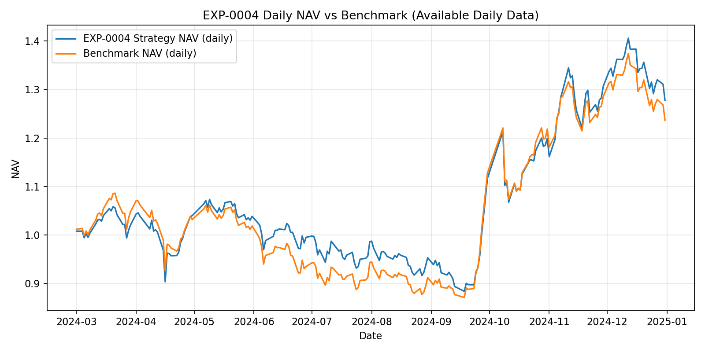
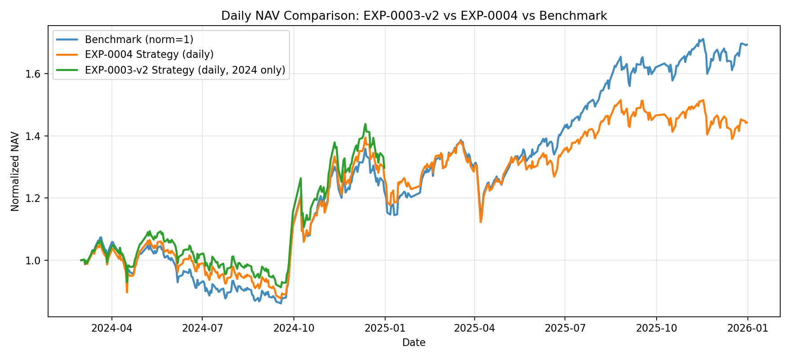
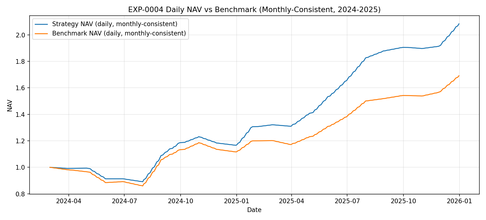
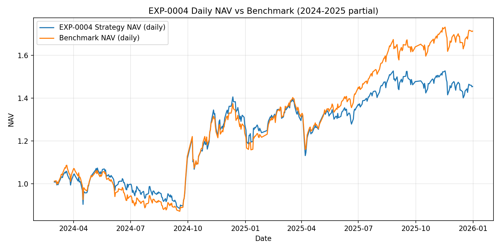

日更虚拟盘 + GitHub Pages 看板。当前页面展示 EXP-0004 的净值表现、持仓摘要、比较指标，并预留了 GitHub Actions 自动刷新与 Telegram topic 推送入口。




main 后，GitHub Actions 会构建并推送到 gh-pages。QUANTWHISPER_SOURCE_DIR（本地）或后续接入远端数据源，脚本会先同步最新快照再构建。